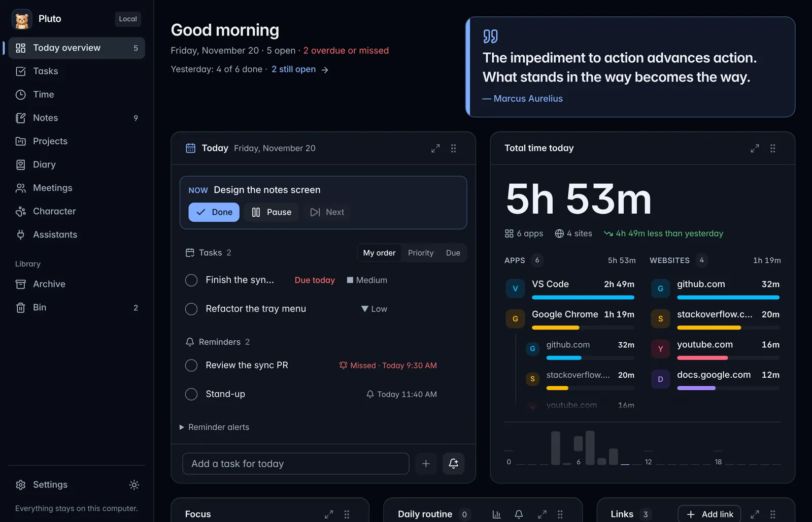
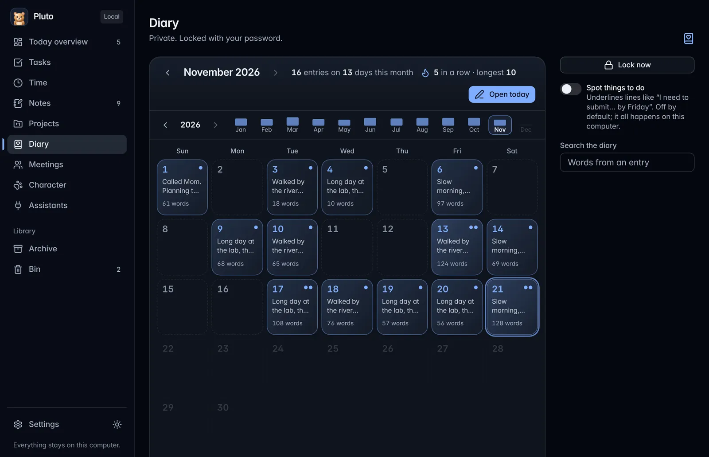

Small companion. Big universe.
A little friend that lives on your desktop and keeps your tasks, focus, time and notes in one calm place. It cheers when you get things done.
Free. Version 0.6.0. No account.
Your day is everywhere.Pluto keeps it in one small place.
A sticky note, a calendar, 23 tabs, three apps and an email you meant to answer.
Everything for today in one list, with a friend at the edge of your screen who notices when you finish.
Meet Pluto. Go on, tick something.
This is a small copy of Pluto's Today list, with the real pet beside it. Tick a task, add one, remove one, or click the pet. On your desktop it works the same way, all day.
- Finish a task and the pet jumps
- Add one and it waves
- Finish them all and it celebrates
Nothing left. Add something for today.
A day with Pluto
Morning: one look at today
Open Pluto and the whole day is on one page: what you're on now, what's next, reminders, and yesterday's leftovers.
Focus: one task at a time
Start a focus session and the pet keeps the timer beside it. Tasks have due dates, priorities and reminders, for the week or the whole month.
Lunch: where did the morning go?
Pluto quietly tracks which app and which website you used, with no timer to start. It pauses when you step away.
Evening: write it down
Jot a note before it slips away. Pin the important ones, add labels, and find anything later with search.
Night: a private diary
Close the day with a few lines. The diary is locked with your password, and like everything else it stays on your computer.

A small world with everything in orbit
Five parts of your day circle one small planet, so the pet always knows what you're up to.
- FocusThe task you're on, and a timer beside the pet
- TrackWhere the day went, by app and website
- NotesQuick notes, pins and labels
- ProjectsTasks, due dates and reminders, grouped
- CompanionA friend at the edge of your screen
Pick a companion. Dress it up.
Five characters, nine accessories and six ready outfits, all free. Every character can wear every outfit. Try one on.
The pet that follows your pointer wears it too.
A diary that keeps your secrets
End the day with a few lines. The diary is locked with your password and lives only on your computer.
- Locked with your password, and Lock now whenever you step away
- Look back by year and month, or search every entry
- Spot things to do: lines like "I need to submit…" can become tasks. Off until you switch it on
- Assistants can never see it

Your day stays on your computer
What you plan, write and track is yours, and it stays where you put it.
- No account. Install it and start. There is nothing to sign up for.
- One file, on your disk. Tasks, notes and tracked time are saved on this computer and never uploaded.
- A diary only you can open. It is locked with your password. More about the diary
- Assistants only if you say so. Off until you switch them on, and they can never see your diary.
Works with your coding assistant
Claude Code, Codex, Cursor, OpenCode and more can read your day and add tasks, and the pet tells you when a chat finishes or needs you. Off until you switch it on.
Coming next
Calendar integration, Quick Actions, Launch Buddy, quick controls, a mute key, clipboard history and keep-awake. Not in 0.6.0 yet.
Give your day a small companion
Free and private. It takes a minute to install.